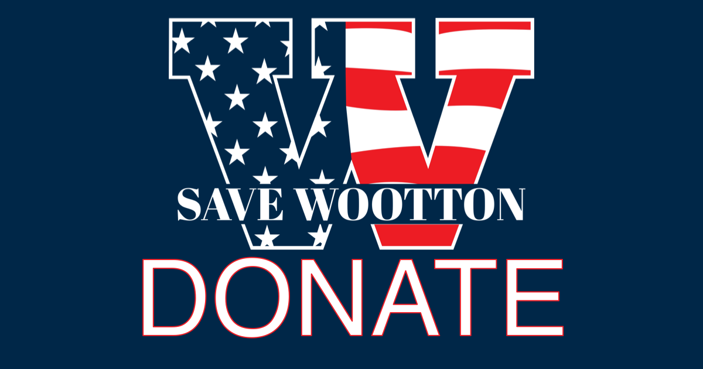

How to Donate
Stripe is our preferred donation method, fastest for you, with Apple Pay and automatic receipts.
Recognized by the IRS as a 501(c)(4) social welfare organization · EIN 41-4472442
Our case is moving forward. At the first prehearing conference on September 1, the administrative law judge dismissed MCPS's motion to dismiss without prejudice, and the case now proceeds through discovery. Evidentiary hearings are set for December 8, 9, and 10, the most important and resource-intensive phase yet.
Stripe is our preferred donation method, fastest for you, with Apple Pay and automatic receipts.
Recognized by the IRS as a 501(c)(4) social welfare organization · EIN 41-4472442
Recent coverage: Bethesda Magazine and MyMCMedia (September 3, 2026). More at SaveWootton.org/news.
This case is about Wootton, but the question it raises belongs to every community in Maryland. Can a school system remove an established school from the neighborhood it has served for generations without applying the state's school-closing protections, simply by calling the move a relocation?
If the answer is yes, no community has meaningful protection. Families buy homes based on school assignments. Counties plan housing, transportation, and capital budgets around where schools sit. None of that planning holds if a board of education can relocate a school without a rigorous, transparent, collaborative process.
There is a second pattern worth naming. Capital improvements at Wootton were postponed for years while the building deteriorated, and the resulting condition then helped justify moving the school. Other aging MCPS schools face the same needs: HVAC, roofs, plumbing, electrical. CEPA supports competitive teacher pay and well-funded classrooms, and maintaining school buildings is also a fundamental responsibility. Deferred maintenance should not become a pathway to closure.
The question for Montgomery County families is no longer only “what happened to Wootton.” It is “could this happen to our school?” You do not have to be a Wootton family to have a stake in the answer.
Discovery is ongoing, the most important and resource-intensive phase of the case yet. We're asking every family to give $150 before the December hearing, with giving levels of $250, $500, and $1,000 for those who can do more. No contribution is too small.
Wootton alumni: take the class challenge. Add your graduation year to the note field in the donation form above (or the payment memo on Venmo and PayPal) and represent your class.
You can also show your support with a $10 yard sign. Details at SaveWootton.org.
When community members filed public records requests, MCPS said fulfilling them would cost tens of thousands of dollars. Now the tables have turned: discovery compels MCPS to produce those documents. Your donation funds:

The Community and Education Policy Alliance (CEPA) is a social welfare organization registered in Maryland. CEPA is recognized by the IRS as a 501(c)(4) social welfare organization (EIN 41-4472442). Contributions to CEPA are not tax-deductible as charitable donations.
We are raising funds to challenge the Montgomery County Board of Education's March 26, 2026 decision to close Thomas S. Wootton High School. CEPA's core focus is to ensure that Wootton remains open at its current location on Wootton Parkway and is properly renovated.
This decision has been marked by a lack of transparency, procedural failures, and decision-making that has not followed the legal processes required under Maryland law for the closure of a public school. CEPA exists to hold MCPS and the Board of Education accountable for how these decisions are made: not just what they decide, but how they decide it.
CEPA is represented by Silverman Thompson.
Funds raised will be used primarily for costs associated with challenging the Board's March 26, 2026 decision to close Wootton High School and related actions. This includes upfront organizational and filing expenses (such as assistance from Foundation Group and BryteBridge in completing state and federal nonprofit filings), as well as ongoing legal and advocacy efforts, including but not limited to:
To ensure that donations are managed responsibly and used for their intended purpose:
If funds raised exceed the immediate costs of litigation and administrative proceedings, remaining funds will be used to advance CEPA's broader mission of promoting accountability and transparency within Montgomery County Public Schools. This may include monitoring of MCPS policies and decisions, public records requests, policy analysis, and other oversight activities in the interest of the communities CEPA serves.
Contributions are non-refundable. All donations are final and will be applied to CEPA's mission as described above.